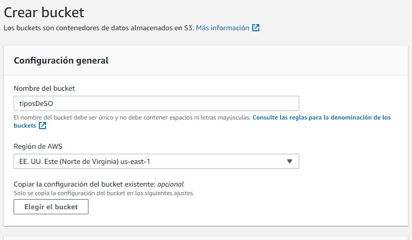
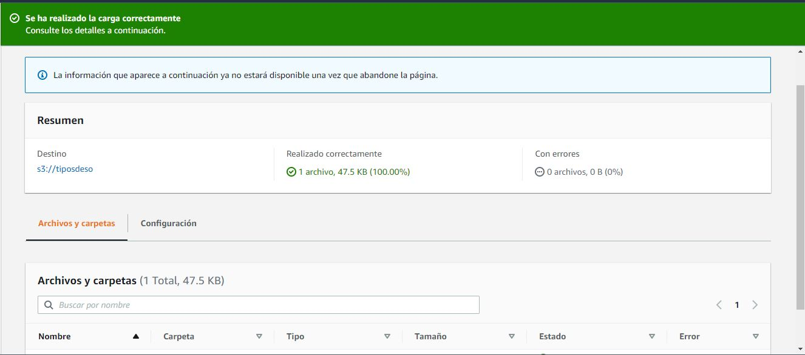

AWS cuenta con un servicio de almacenamiento en la nube llamado S3 Storage, con el que se pueden crear contenedores llamados buckets en los cuales alojar archivos, para esta practica solo se presentaran capturas de pantalla del proceso realizado.
Primero se accedio mediante la consola de AWS para crear el contenedor para subir los archivos.
Como paso final de este laboratorio de introduccion, se subieron archivos al bucket, obteniendose un resultado satisfactorio. En el lab 15 se probara su funcionamiento con Hosting de AWS.
